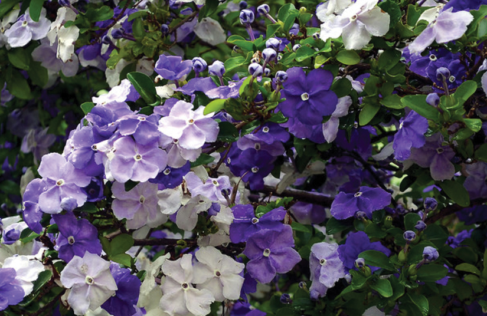

Una de las más coloridas plantas nativas de Argentina,
donde la conocemos como margarita punzó. Está presente, por ejemplo, en 9 áreas protegidas
de nuestro país. Es una especie herbácea y rastrera, con tallos tendidos. Posee flores de color rojo intenso,
que se agrupan en inflorescencias circulares en el extremo de los tallos. Crece en pastizales y al costado de los caminos, en suelos ricos.
Erythrina crista-galli
O conocido como ceibo, se trata de un árbol longevo que puede llegar a medir hasta diez metros de altura y se destaca por sus flores de color rojo intenso.
Naturalmente se encuentra en los alrededores de las riberas, lagunas y pajonales del norte y centro argentino, si bien también es nativo de Bolivia, Uruguay, Brasil y Paraguay.
Se trata de un vegetal que florece en primavera y que requiere de mucho sol, así como de un suelo medianamente húmedo. Entre los cuidados sugeridos, hasta que toma el tamaño de un árbol adulto y asentado, se recomienda protegerlo de las heladas.
El ceibo es un árbol que puede crecer en una maceta sin problemas, a la vez que puede reproducirse fácilmente plantando sus semillas.
Calliandra brevipes
El plumerillo rosado es una especie que crece naturalmente en el noreste argentino hasta la altura de Buenos Aires. También crece en Brasil, Paraguay y Uruguay.
El nombre de la planta hace referencia a la forma de su flor, que se asemeja a un plumero blanco con las puntas rosadas.
Se trata de una planta perenne, que florece en primavera, verano y parte del otoño, y puede llegar a medir dos metros de altura.
Puede cultivarse en maceta y se la debe mantener en lugares protegidos de las heladas debido a que no las toleran demasiado.
Brunfelsia pauciflora
Es un arbusto con flores blancas y lilas de gran belleza, que es nativo de las selvas y bosques del noreste de Argentina, hasta la altura de Santa Fe.
Puede llegar a los cuatro metros de altura y pierde las hojas en invierno. Entre la primavera y el otoño se llena de vida con sus coloridas flores y con su agradable perfume.
Es un arbusto que puede vivir en macetas siempre que se lo ubique bajo una sombra parcial o cuidando que el sol no le impacte de manera directa. Además, si bien debe mantenerse su tierra con humedad constante, no debe regárselo con demasiada agua
Un cuidado adicional, si se quiere plantar un jazmín del Paraguay, es que no se lo debe exponer a temperaturas muy frías, y debe cuidárselo de las heladas

Acacia caven
Es un árbol que crece naturalmente en el norte y centro de Argentina hasta la altura de Buenos Aires. También puede encontrarse en todos los países limítrofes, en donde crece también de manera natural.
Se trata de un árbol que puede alcanzar los seis metros de altura y debe su nombre al aroma de sus hermosas flores amarillas que florecen antes de la salida de las hojas del árbol, perfumando todo su entorno.
Se trata de una planta muy adaptable que se ajusta a una gran variedad de suelos, ya sean húmedos como secos. Si bien se trata de una planta más bien resistente, tiene una gran necesidad de luz solar directa
Cortaderia selloana
Las cortaderas son una planta que actualmente está muy de moda en el paisajismo ya que es muy adaptable y puede ubicarse prácticamente en cualquier tipo de suelo.
Se trata de una planta que crece con notable rapidez en variadas condiciones climáticas y de suelos, por lo que en algunas regiones, como en Entre Ríos por ejemplo, se ha vuelto una planta invasora que crece sin control a los costados de las rutas.
En Argentina es nativa de la región de Cuyo y en el centro y norte del país hasta Buenos Aires. También puede encontrarse en Uruguay, Chile y Brasil.
Pueden llegar a medir hasta tres metros de altura y su flor se asemeja a una gran pluma tupida de color beige. Es este el atributo por el cual se destaca la planta como un elemento ornamental en la decoración de paisajes.
Sin embargo, cabe hacer una advertencia con respecto a esta bella planta, y es que la cortadera debe manipularse con cautela ya que sus hojas pueden resultar elementos muy cortantes al tacto.